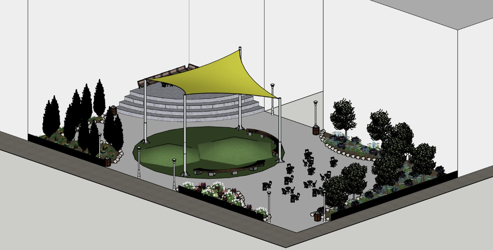
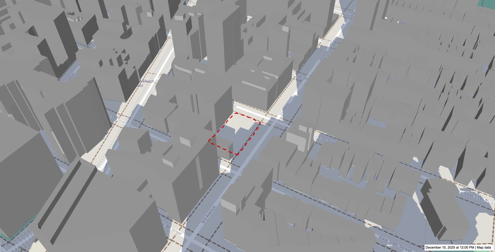
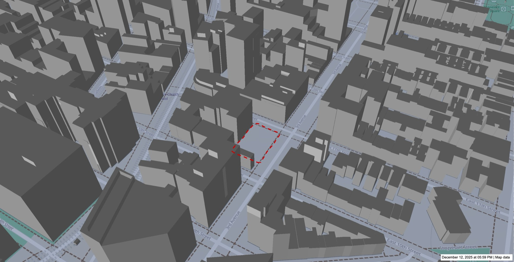
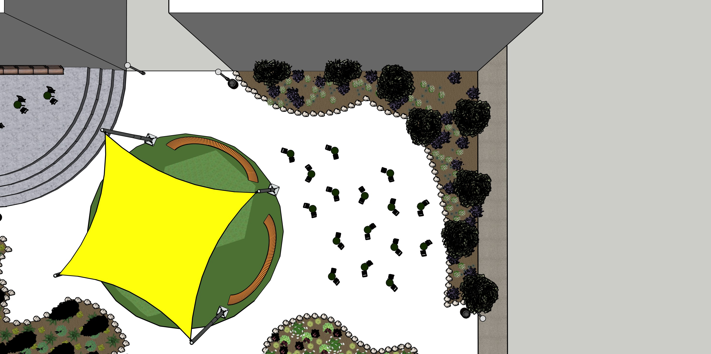
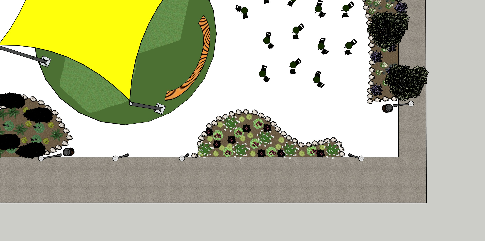
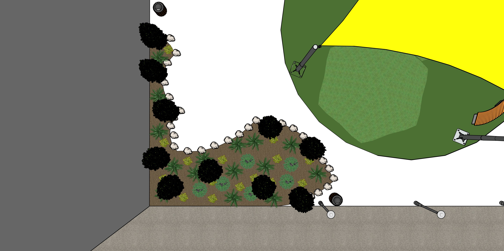
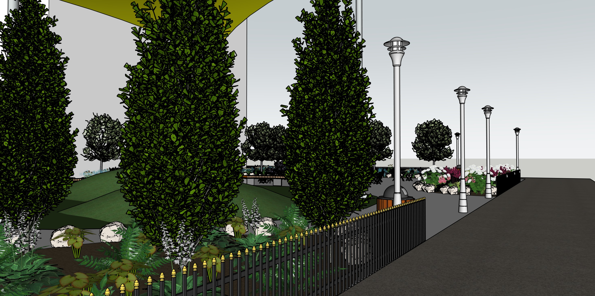
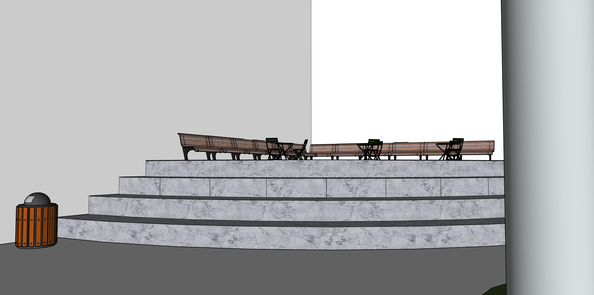
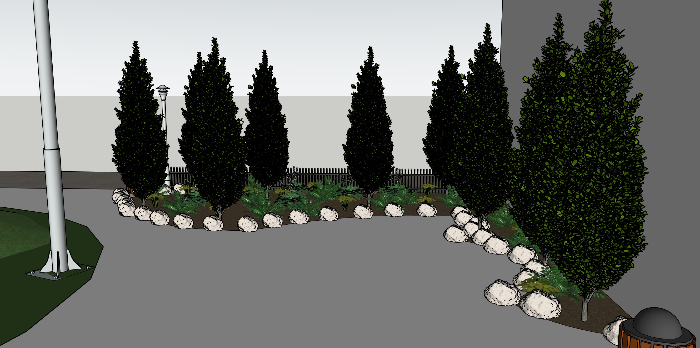

Haven Park

Haven Park transforms an unused, fenced lot in the East Village into a small urban refuge that offers a moment of calm within a dense and busy neighborhood. The design focuses on creating a soft and welcoming atmosphere through layered planting, shade, and natural elements, replacing the harsh and inactive conditions of the existing site. At the same time, the park is organized with a clear and open layout that improves visibility, safety, and accessibility, supporting comfortable everyday use and encouraging quiet social interaction.
Urban Context


Located along 3rd Avenue in a dense urban fabric, the site is surrounded by mid-rise residential and commercial buildings with high pedestrian activity but lacks accessible green space.
Existing Conditions
The site is an unused, fenced-off lot with no greenery, seating, or public access, creating a harsh and inactive street edge.
Design Strategy
- Refuge: Create a quiet space for rest within a busy neighborhood.
- Visibility: Maintain open sightlines for safety and comfort.
- Ecology: Integrate planting and permeable surfaces to manage stormwater.
Planting System

Zone 1: Sun-exposed edge with drought-tolerant planting.

Zone 2: Transitional planting with soft textures and seasonal variation.

Zone 3: Shaded area with dense planting for a quiet atmosphere.
Spatial Experience



Curved pathways and layered planting slow down movement and create a calm, immersive environment within the compact site.
Circulation & Spatial Organization
The park is organized through a series of gentle, curved pathways that guide movement from the busy street edge into a quieter interior. This spatial transition slows down pedestrian flow and creates a psychological shift from the intensity of 3rd Avenue to a more relaxed environment.
Hydrological System
A rain garden band is integrated along the street edge to capture and filter stormwater runoff. The system uses permeable surfaces and layered soil composition to increase infiltration and reduce pressure on the surrounding urban drainage system.
Material Strategy
Warm-toned permeable pavers and composite wood seating were selected to create both visual comfort and environmental performance. These materials reduce heat absorption and improve long-term durability while maintaining a soft, natural atmosphere.
Lighting & Safety
Pedestrian-scale lighting is carefully positioned along main circulation paths to ensure visibility while maintaining a calm nighttime atmosphere. Open sightlines and low planting heights support passive surveillance and overall safety.
Accessibility
The park is designed to be fully accessible, with smooth pathways and gentle slopes that allow easy movement for all users. Seating and circulation are arranged to ensure inclusivity without disrupting the overall spatial flow.
Project Goal
- Transform: Converting an unused, fenced lot into a quiet urban refuge within the East Village.
- Soften: Introducing layered planting, shade, and natural elements to create a calm and welcoming atmosphere.
- Open: Designing a clear, safe, and accessible layout that supports visibility and everyday use.
Haven Park demonstrates how small urban sites can be transformed into meaningful public spaces that balance ecological performance, spatial comfort, and everyday social use.